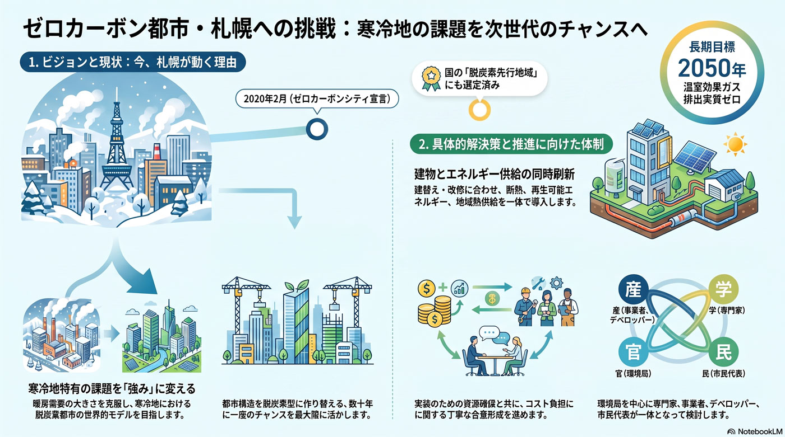

環境・エネルギー
世代単位
寒冷地の暖房脱炭素と熱供給
暖房由来の排出が大きい札幌では、熱の脱炭素が要となる。

背景
寒冷地の札幌は暖房需要が大きく、家庭・業務部門の排出に占める熱の割合が高い。ゼロカーボン達成には電気だけでなく、建物の断熱と地域熱供給・再エネ熱への転換が不可欠だが、改修コストの負担が壁になる。
事実
- 札幌は寒冷地で暖房需要が大きく、脱炭素には建物の断熱や地域熱供給の脱炭素化が重要とされる。
- 都心ではエネルギーの面的利用を進める都市開発の制度が運用されている。
解釈
電力の脱炭素だけでは寒冷地の排出は減らせない。熱の脱炭素は建替え・改修の機会を捉えるしかなく、タイミングを逃すと数十年固定される。
提案
- 建物の高断熱化と地域熱供給・再エネ熱の導入（改修コストの支援とセット）。
- 都心の面的エネルギー利用の拡大。
検討体制・メンバー
札幌市環境局・まちづくり政策局が連携する。検討会には熱供給・断熱建築の専門家、熱供給事業者、デベロッパー、住宅所有者の代表を入れ、建替え・改修の機会に合わせた熱の脱炭素と費用負担を設計する。
AIノート
AIの貢献度は中。地域熱供給の需給最適制御、建物ごとの省エネ診断と断熱改修の効果予測、面的エネルギー利用の設計支援に役立つ。導入の主役は建築・設備投資で、AIは運用効率と計画の最適化を担う。